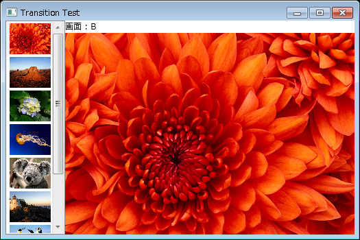

WPF アプリケーションで画面遷移のアニメーションをどのように実現させるかを悩んだ末、次のような要求仕様を考えました。
1. MVVM で頑張る。
2. アニメーションの設定および実行はすべて View 側の XAML で記述する。
3. ViewModel 側にアニメーションの待機を意識させない。
以上の観点からいろいろ調査した結果、今回のサンプルアプリケーションが完成しました。
とはいっても web のどこかで見かけたコードとほとんど同じなんですが。
参考にしたサイトの URL もわからなくなってしまったので、自分のメモ用としてもここに残しておきます。
サンプルアプリケーションのイメージは次のようなものです。

左側に ListBox で表示されている画像を選択すると、
右側に表示されるというただそれだけのアプリケーションです。
また、今回はデバッグ的に遷移状態をテキストで表示させます。
ただ単に画面遷移をするのではなく、
画面遷移時にアニメーションをおこないたいため、
遷移前の画面と遷移後の画面を同時に表示しなくてはいけません。
したがって、遷移前のオブジェクトと遷移後のオブジェクトを保持する Transition クラスを考えます。
namespace TransitionTest
{
using System.Windows;
/// <summary>
/// 画面遷移用オブジェクト保持クラス
/// </summary>
public class Transition : FrameworkElement
{
public enum TransitionState
{
A,
B,
}
public static readonly DependencyProperty DisplayAProperty = DependencyProperty.Register(
"DisplayA",
typeof(object),
typeof(Transition));
/// <summary>
/// 画面 A
/// </summary>
public object DisplayA
{
get { return GetValue(DisplayAProperty); }
set { SetValue(DisplayAProperty, value); }
}
public static readonly DependencyProperty DisplayBProperty = DependencyProperty.Register(
"DisplayB",
typeof(object),
typeof(Transition));
/// <summary>
/// 画面 B
/// </summary>
public object DisplayB
{
get { return GetValue(DisplayBProperty); }
set { SetValue(DisplayBProperty, value); }
}
public static readonly DependencyProperty StateProperty = DependencyProperty.Register(
"State",
typeof(TransitionState),
typeof(Transition));
/// <summary>
/// 画面の遷移状態
/// </summary>
public TransitionState State
{
get { return (TransitionState)GetValue(StateProperty); }
set { SetValue(StateProperty, value); }
}
public static readonly DependencyProperty SourceProperty = DependencyProperty.Register(
"Source",
typeof(object),
typeof(Transition),
new PropertyMetadata(
delegate(DependencyObject obj, DependencyPropertyChangedEventArgs e)
{
(obj as Transition).Swap();
}));
/// <summary>
/// 新規画面
/// </summary>
public object Source
{
get { return GetValue(SourceProperty); }
set { SetValue(SourceProperty, value); }
}
/// <summary>
/// 状態を入れ替える
/// </summary>
private void Swap()
{
if (State == TransitionState.A)
{
DisplayB = Source;
State = TransitionState.B;
}
else
{
DisplayA = Source;
State = TransitionState.A;
}
}
}
}
namespace TransitionTest { using System.Windows; /// <summary> /// 画面遷移用オブジェクト保持クラス /// </summary> public class Transition : FrameworkElement { public enum TransitionState { A, B, } public static readonly DependencyProperty DisplayAProperty = DependencyProperty.Register( "DisplayA", typeof(object), typeof(Transition)); /// <summary> /// 画面 A /// </summary> public object DisplayA { get { return GetValue(DisplayAProperty); } set { SetValue(DisplayAProperty, value); } } public static readonly DependencyProperty DisplayBProperty = DependencyProperty.Register( "DisplayB", typeof(object), typeof(Transition)); /// <summary> /// 画面 B /// </summary> public object DisplayB { get { return GetValue(DisplayBProperty); } set { SetValue(DisplayBProperty, value); } } public static readonly DependencyProperty StateProperty = DependencyProperty.Register( "State", typeof(TransitionState), typeof(Transition)); /// <summary> /// 画面の遷移状態 /// </summary> public TransitionState State { get { return (TransitionState)GetValue(StateProperty); } set { SetValue(StateProperty, value); } } public static readonly DependencyProperty SourceProperty = DependencyProperty.Register( "Source", typeof(object), typeof(Transition), new PropertyMetadata( delegate(DependencyObject obj, DependencyPropertyChangedEventArgs e) { (obj as Transition).Swap(); })); /// <summary> /// 新規画面 /// </summary> public object Source { get { return GetValue(SourceProperty); } set { SetValue(SourceProperty, value); } } /// <summary> /// 状態を入れ替える /// </summary> private void Swap() { if (State == TransitionState.A) { DisplayB = Source; State = TransitionState.B; } else { DisplayA = Source; State = TransitionState.A; } } } }
上記で定義した Transition クラスを MainWindow で活用しましょう。
その前に、
MainWindow の基本的な外観を作成します。
<Window x:Class="TransitionTest.MainWindow"
xmlns="http://schemas.microsoft.com/winfx/2006/xaml/presentation"
xmlns:x="http://schemas.microsoft.com/winfx/2006/xaml"
Title="Transition Test" Height="350" Width="525">
<DockPanel>
<ListBox DockPanel.Dock="Left" Name="Items" SelectedIndex="0">
<ListBox.Resources>
<DataTemplate DataType="{x:Type ImageSource}">
<Image Margin="2" Width="60" Source="{Binding}" />
</DataTemplate>
</ListBox.Resources>
<ListBox.ItemsSource>
<x:Array Type="{x:Type ImageSource}">
<ImageSource>Resources/Chrysanthemum.jpg</ImageSource>
<ImageSource>Resources/Desert.jpg</ImageSource>
<ImageSource>Resources/Hydrangeas.jpg</ImageSource>
<ImageSource>Resources/Jellyfish.jpg</ImageSource>
<ImageSource>Resources/Koala.jpg</ImageSource>
<ImageSource>Resources/Lighthouse.jpg</ImageSource>
<ImageSource>Resources/Penguins.jpg</ImageSource>
<ImageSource>Resources/Tulips.jpg</ImageSource>
</x:Array>
</ListBox.ItemsSource>
</ListBox>
<ContentControl Content="{Binding SelectedItem, ElementName=Items}">
<ContentControl.Resources>
<DataTemplate DataType="{x:Type ImageSource}">
<Grid>
<Image Source="{Binding}" StretchDirection="DownOnly" />
</Grid>
</DataTemplate>
</ContentControl.Resources>
</ContentControl>
</DockPanel>
</Window>
<Window x:Class="TransitionTest.MainWindow" xmlns="http://schemas.microsoft.com/winfx/2006/xaml/presentation" xmlns:x="http://schemas.microsoft.com/winfx/2006/xaml" Title="Transition Test" Height="350" Width="525"> <DockPanel> <ListBox DockPanel.Dock="Left" Name="Items" SelectedIndex="0"> <ListBox.Resources> <DataTemplate DataType="{x:Type ImageSource}"> <Image Margin="2" Width="60" Source="{Binding}" /> </DataTemplate> </ListBox.Resources> <ListBox.ItemsSource> <x:Array Type="{x:Type ImageSource}"> <ImageSource>Resources/Chrysanthemum.jpg</ImageSource> <ImageSource>Resources/Desert.jpg</ImageSource> <ImageSource>Resources/Hydrangeas.jpg</ImageSource> <ImageSource>Resources/Jellyfish.jpg</ImageSource> <ImageSource>Resources/Koala.jpg</ImageSource> <ImageSource>Resources/Lighthouse.jpg</ImageSource> <ImageSource>Resources/Penguins.jpg</ImageSource> <ImageSource>Resources/Tulips.jpg</ImageSource> </x:Array> </ListBox.ItemsSource> </ListBox> <ContentControl Content="{Binding SelectedItem, ElementName=Items}"> <ContentControl.Resources> <DataTemplate DataType="{x:Type ImageSource}"> <Grid> <Image Source="{Binding}" StretchDirection="DownOnly" /> </Grid> </DataTemplate> </ContentControl.Resources> </ContentControl> </DockPanel> </Window>
目的はあくまでも画面遷移時にアニメーションさせることなので、
冒頭で作成した Transition クラスを使いたいと思います。
まず、MainWindow から Transition クラスを参照するために、名前空間を追加します。
<Window x:Class="TransitionTest.MainWindow"
xmlns="http://schemas.microsoft.com/winfx/2006/xaml/presentation"
xmlns:x="http://schemas.microsoft.com/winfx/2006/xaml"
xmlns:local="clr-namespace:TransitionTest"
Title="Transition Test" Height="350" Width="525">
<Window x:Class="TransitionTest.MainWindow" xmlns="http://schemas.microsoft.com/winfx/2006/xaml/presentation" xmlns:x="http://schemas.microsoft.com/winfx/2006/xaml" xmlns:local="clr-namespace:TransitionTest" Title="Transition Test" Height="350" Width="525">
<Window.Resources>
<DataTemplate x:Key="Transition">
<StackPanel>
<local:Transition x:Name="t" Source="{Binding}" />
<TextBlock Text="{Binding State, ElementName=t, StringFormat='画面 : {0}'}" />
<Grid>
<ContentControl Name="a" Content="{Binding DisplayA, ElementName=t}" Visibility="Hidden" />
<ContentControl Name="b" Content="{Binding DisplayB, ElementName=t}" Visibility="Hidden" />
</Grid>
</StackPanel>
<DataTemplate.Triggers>
<DataTrigger Binding="{Binding State, ElementName=t}" Value="A">
<Setter TargetName="a" Property="Visibility" Value="Visible" />
</DataTrigger>
<DataTrigger Binding="{Binding State, ElementName=t}" Value="B">
<Setter TargetName="b" Property="Visibility" Value="Visible" />
</DataTrigger>
</DataTemplate.Triggers>
</DataTemplate>
</Window.Resources>
<Window.Resources> <DataTemplate x:Key="Transition"> <StackPanel> <local:Transition x:Name="t" Source="{Binding}" /> <TextBlock Text="{Binding State, ElementName=t, StringFormat='画面 : {0}'}" /> <Grid> <ContentControl Name="a" Content="{Binding DisplayA, ElementName=t}" Visibility="Hidden" /> <ContentControl Name="b" Content="{Binding DisplayB, ElementName=t}" Visibility="Hidden" /> </Grid> </StackPanel> <DataTemplate.Triggers> <DataTrigger Binding="{Binding State, ElementName=t}" Value="A"> <Setter TargetName="a" Property="Visibility" Value="Visible" /> </DataTrigger> <DataTrigger Binding="{Binding State, ElementName=t}" Value="B"> <Setter TargetName="b" Property="Visibility" Value="Visible" /> </DataTrigger> </DataTemplate.Triggers> </DataTemplate> </Window.Resources>
<ContentControl Content="{Binding SelectedItem, ElementName=Items}"
ContentTemplate="{StaticResource Transition}">
<ContentControl Content="{Binding SelectedItem, ElementName=Items}" ContentTemplate="{StaticResource Transition}">
MVVM で頑張ると書いておきながら、
MainView から Transition.cs を使用するのはどうなんだろう．．．？
まあこだわりすぎて複雑になるのは本末転倒なのでここはこれで良しとしよう。
さて、画面遷移のアニメーションと書いておきながら今回はアニメーションしていません。
次回は今回のサンプルアプリケーションをベースに
フェードやワイプなどのアニメーションを XAML だけで記述します。